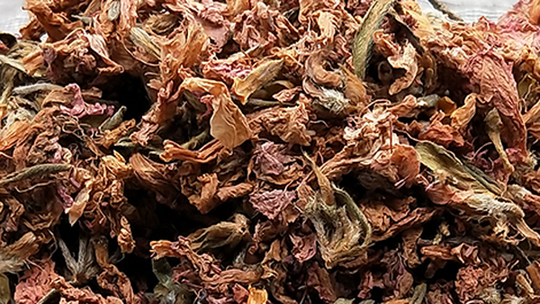
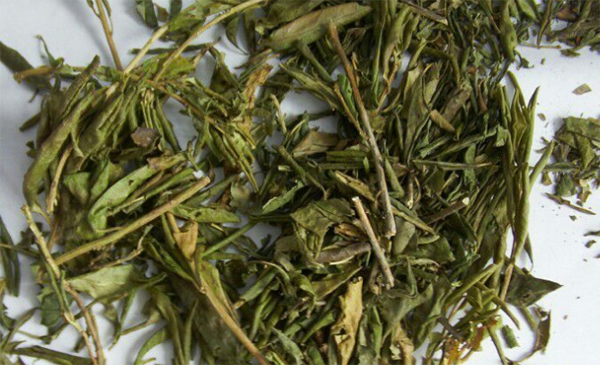

说起满山红很多朋友如果不知道了话，那么说山石榴大家肯定就知道了，满山红是一种先开花后张叶的植物，当它们生长的时候山坡上都是红的所以叫满山红。满山红不仅有很大的观赏性，它还是一个止咳平喘非常好的一个药材。
1、止咳平喘

满山红是一个非常好的止咳平喘的药材，可以治疗感冒后引起的咳嗽，气管炎导致的长时间的咳嗽咳痰，这种情况的患者可以用水煎服满山红，一日三次服用。
2、治疗慢性支气管炎
慢性支气管炎是一个比较普遍但是不好治愈的病，小孩子还会发展成为哮喘，满山红的止咳平喘的药效非常强，将满山红和别的药物配伍使用，可以治愈慢性支气管炎。
1、降低血压

满山红有很强的降低血压的作用，其功效太强不能用来降高血压，容易引起低血压，所以服用满山红时要注意量，本事有低血压的患者不要使用。
2、造成心律失常
满山红有降低血压和减慢心律的作用，但是突然降低血压减慢心律会导致心律不齐，心律失常，本事就有冠心病等心脏疾病的患者不易食用。
3、老年人慎用
高血压、冠心病、低血压基本都是老年人的常见病，所以满山红控制不了药量的时候，老年人禁止使用，虽然满山红止咳平喘的药效很强但是副作用对于老年人来说较大。
结语：通过上文的介绍，相信大家都知道了满山红的功效与作用和满山红的副作用，希望朋友们在生活中能够使用适量的满山红治疗咳嗽咳痰。